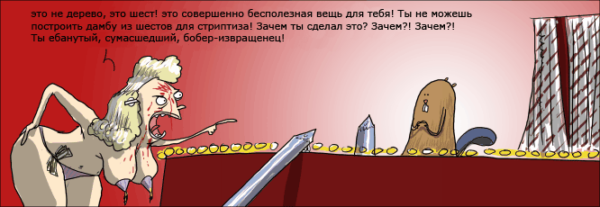

«Голеностоп» с Наташей Кличко
2 тур, 17 января
Это пиздец! Стоило мне только отметить в прошлом выпуске «Голеностопа» своих любимчиков, как обоих, на той же неделе, сломали в матчах лиг. И если амбал Млыня из «Мочи» отделался лёгким испугом (а в раздевалке уже сам кое-кого отделал лёгким испугом), то «Бобру» Пенафелю повезло меньше. С поля перуанца уесли на носилках. Впрочем врачи утверждают, что к следующему матчу «Бобров» в Кубке Колотиловки, тафгай должен поправиться.
На лицо очевидный сглаз. Всё идёт к тому, что не стоит мне каркать и выбирать очередных любимчиков, но ведь мне похуй! Поэтому любимчики будут.
Кексы - Мекай (1-7)
Да ещё какие! Ведущего форварда «Мекаев» — киприота Georgousopoulosа — по фамилии называть стрёмно. Поэтому в кулуарах он просто Жора. Именно Жора по ходу матча... Хотя давайте по порядку.
Первый тайм прошёл под знаком борьбы двух вингеров. Мекайный швейцарец пьяница Ионица и испанский кикса Камачо повздорили уже на пятнадцатой минуте, когда первый свалил соперника приёмом, который в сальсе называется «кукарача тёрн». Ну вы знаете — обычная кукарача, с разворотом на первом и пятом шагах.
Камачо, цитирую, «темпераментный и справедливый», но вот не задача — почти на десяток лет моложе своего обидчика. И справа к Ионице подойдёт, и слева, и подпрыгнет, и подкатится... Пыхтел четверть часа. В итоге на 32-й минуте в пылу сражения, юнец закричал «смотрите! глинтвейн!», и тут же вдарил отвернувшегося швейцарца под коленку. Судья, сука, не пьющий и всё видел.
Во втором тайме инициативу решил перехватить противоположный край поля. Но здесь случился казуз, поскольку 37-летнему датскому амбалу Лау (мекай) противостоял испанский юнец с женским именем Хеленя Мариняс. Мариняс, конечно же, пытался не ввязываться в драку. А датчанин бегал по всему флангу с криками «Иди ко мне, моя Леночка-Мариночка, я тебя расцелую!». Могло бы выйти неплохое порно, но судья, сука, не только непьющий, но и адвентист седьмого дня. Через десять минут к Маринясу подкатил новый ухажёр, но получив отказ в сердцах швырнул в юнца мячиком.
Но на фоне всей этой мыльной оперы блистала другая звезда. Тот самый мекайный Жора к 83 минуте успел зафигачить в ворота соперников два мячика. Кексы, естественно, в ахуе. Мол, что это за «неприятный человек»? И бросились было выпроваживать киприота с поля... Первым под раздачу попал центровой кексов 24-летний Фрайер из Бельгии. Жора — даром головой играет, что твой Зидан — нагнулся до самой травы и хоп, лбом по колену. Зрители визжат от восторга, а Фрайер отдыхает три недели. Ну тут дальше пошла заварушка на последней минуте матча, но в основном синяки, ушибы и в отчёте они не сохранились. Мог отличиться 30-летний мекай Дельгадо, но вместо головы соперника случайно попал по мячу и каким-то невероятным финтом забросил его в сетку ворот.
Бендер - Смрад (2-2)
Повинуясь модному в этом сезоне осень-зима течению «если противник сильнее, то сломай ему Шерифа Ходю», команды бендер и вонючки поставили балет.
Акт первый.
Действующие лица:
Хор мальчиков Бендеров.
Хор мальчиков вонючек.
Бендеры и вонючки появляются на сцене с разных концов. Шериф Ходя вызывающе играется с мячиком выворачивая нереальные финты. Его партнёры, выражая неуверенность и суматоху, опасливо ходят кругами пытаясь разобраться в своей постановке. Сольный номер молодого баритона Винте и занавес.
Акт второй.
Хор вонючек ещё более уходит на второй план и подвывает. Танец «чё-ти-лезещ» исполняют заслуженные артисты Джон Билблядь (сценический псевдоним) и Нестор Солорзано. После танца «на поле началась неразбериха». Хор бендеров бегал по всей сцене, махал руками над головой, кричал «а-а-а!» и «улю-лю-лю-лю!». Всё это дополнялось светомузыкой и в кульминационный момент хор бендеров показывал уже эпическую суматоху, которая будет занесена в анналы искусства.
После пары мелких фолов — занавес, аплодисменты, поклоны, цветы, вся хуйня.
Если честно, то может быть бомонд Ницы и Милана это представление и вставило, но меня не очень. В танце с саблями Хачатуряна и то больше костики, чем в этом постмодерне. Неудачный эксперимент.
Кокашки - Мясо (1-1), Бобры - Маршалы (3-1)
В самой скучной группе «Ю» нынешнего розыгрыша, команды более сосредоточены на локальных задачах выиграть матчи и набрать очёчков. И в этот раз, решив не баловать зрителей, обе команды показывали угрюмую игру. Если и была в руках судьи жёлтая карточка — то только за какую-то хуйню.
Ну а что Бобры? Как Бобры? Спросите вы. Да никак! Маршалы — известная команда. Им пока вратаря не сломают — и сами не хамят и другим не дают.
Здесь настало время мне поругаться.
Да что это за такое? Добрая половина карточек в прошедшем туре была показана за симуляцию и прочее неспортивное поведение! Одна единственная травма на три недели — даже в детской песочнице лопатками ебашут сильнее. Такое ощущение, что всем поголовно оторвали яйца и на полях сражений теперь, сплошные танцоры и актёры.
Впрочем, спишем всё на бесснежную зиму. И будем надеяться на лучшее.
До встречи, милые мальчики.
Ваша штанга... тьфу... ваша Наташа Кличко.

© World Press
В минувшую среду ебанутые, сумасшедшие бобры-извращенцы не смогли порадовать своих поклонниц.